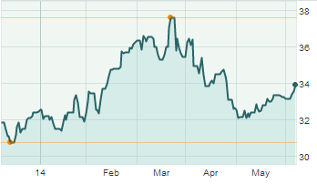

RBC Investment Advisor |
|
Recommendation 1

This investment option was recommended to you based on the past performance of other investors in your cluster.
Name: Mutual Fund X Risk: Low Payoff: Medium, long term Diversity Index: Medium Recommendation 2
This investment option was recommended to you based on the past performance of other investors in your cluster.
Name: Mutual Fund X Risk: Low Payoff: Medium, long term Diversity Index: Medium Recommendation 3
This investment option was recommended to you based on the past performance of other investors in your cluster.
Name: Mutual Fund X Risk: Low Payoff: Medium, long term Diversity Index: Medium |